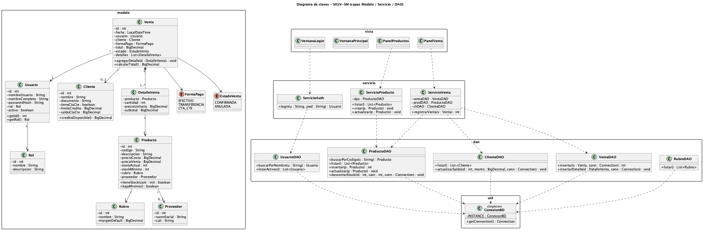
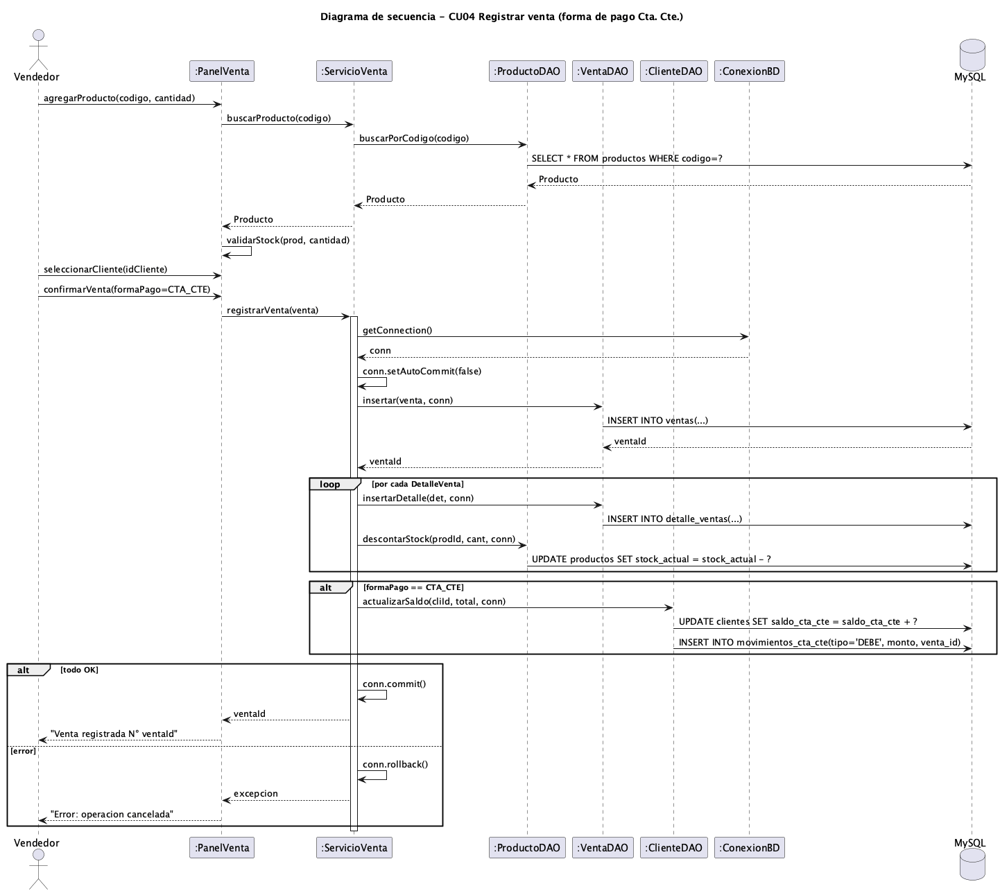
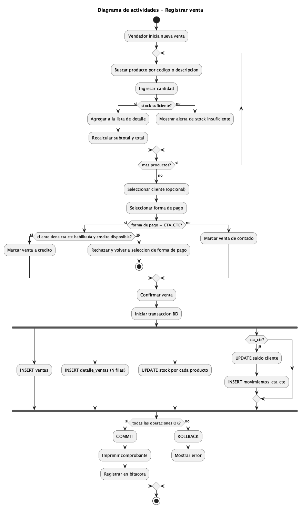
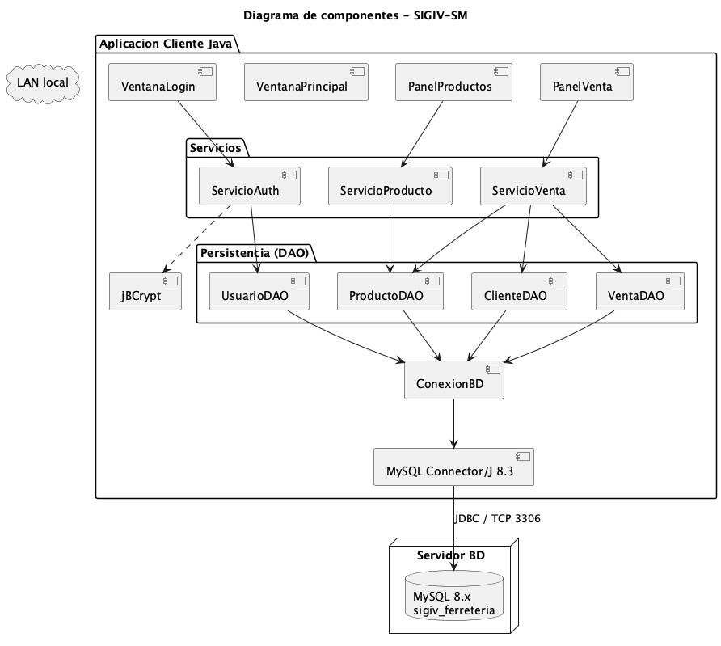
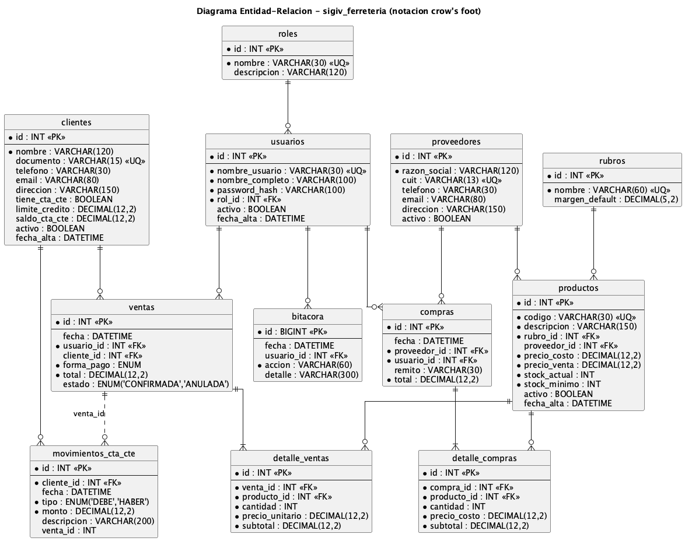
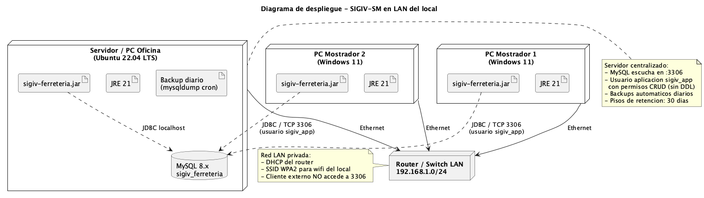

Materia: Seminario de Práctica Informática
Alumno: Ciro Urrustarazu
Email: cirourrustarazu16@gmail.com
Docente: Hugo Frias
Año académico: 2026
Fecha de entrega: Mayo de 2026
Repositorio GitHub: https://github.com/cirola/sigiv-ferreteria
El presente trabajo constituye la segunda entrega del proyecto SIGIV-SM — Sistema de Gestión de Inventario y Ventas para Ferretería San Martín, continuación de la Actividad Práctica 1 en la materia Seminario de Práctica Informática de la Licenciatura en Informática (Universidad Empresarial Siglo 21).
Recupera el contexto, justificación y requerimientos definidos en la AP1 y avanza con la aplicación completa de los modelos de análisis, diseño, implementación y pruebas del Proceso Unificado de Desarrollo (PUD), presentando los artefactos UML correspondientes, el modelo de datos relacional con su Diagrama Entidad-Relación, las consultas SQL para gestionar la base, y las definiciones de comunicación entre los componentes del sistema.
El sistema sigue siendo una aplicación de escritorio multiusuario para una ferretería de barrio cordobesa, desarrollada en Java 17+ con persistencia en MySQL 8.x, arquitectura en tres capas (presentación / lógica / persistencia) y patrones MVC + DAO. El prototipo operacional —ya iniciado en la AP1— se consolida en esta entrega cubriendo los módulos de Seguridad, Productos / Inventario y Ventas (incluyendo cuentas corrientes básicas), con operaciones transaccionales y rollback automático ante error.
Repositorio GitHub: https://github.com/cirola/sigiv-ferreteria
| Aspecto | Definición |
|---|---|
| Organización | Ferretería San Martín — comercio minorista de barrio en Córdoba, 15 años de trayectoria, 3 empleados, ≈ 2.000 productos. |
| Problema | Operatoria 100% manual: ventas en talonario, stock en Excel desactualizado, cuentas corrientes en cuaderno. Pérdidas por quiebres de stock, errores de facturación, sin reportes gerenciales. |
| Solución | SIGIV-SM: aplicación de escritorio cliente-servidor en LAN que integra inventario, ventas, compras y cuentas corrientes. |
| Tecnología | Java 17+ (Swing), MySQL 8.x, Maven, JDBC, jBCrypt. |
| Metodología | Proceso Unificado de Desarrollo (PUD) — fases de Inicio (AP1) y Elaboración / Construcción (AP2). |
| Entregable | Prototipo operacional según Kendall & Kendall (2011): “modelo operacional que incluye solo algunas características del sistema final”. |
Los requerimientos funcionales (RF01–RF10) y no funcionales (RNF01–RNF08) se mantienen sin cambios respecto del documento AP1.
La fase de análisis del PUD parte de los requerimientos relevados y produce un modelo conceptual del dominio del problema, independiente de la tecnología, que será la base para el diseño.
A partir de los sustantivos identificados en los casos de uso y las reglas del negocio, se definieron las siguientes clases conceptuales y sus relaciones:
| Clase conceptual | Rol en el dominio |
|---|---|
| Usuario | Operador del sistema (Administrador o Vendedor). Autentica e identifica al responsable de cada operación. |
| Rol | Conjunto de permisos asociados a un usuario (Administrador, Vendedor). |
| Producto | Artículo comercializado. Tiene código, precio, stock y pertenece a un rubro. |
| Rubro | Categoría comercial (Herramientas, Pinturas, Sanitarios, etc.) con margen sugerido. |
| Proveedor | Tercero al que se le compran productos. |
| Cliente | Persona física/jurídica a la que se le vende. Puede operar con cuenta corriente. |
| Venta | Operación comercial encabezada por un usuario, con uno o varios productos. |
| DetalleVenta | Línea de venta: producto, cantidad, precio unitario, subtotal. |
| Compra | Recepción de mercadería de un proveedor. |
| DetalleCompra | Línea de compra: producto, cantidad, costo. |
| MovimientoCtaCte | Asiento de débito o crédito en la cuenta corriente de un cliente. |
| Bitácora | Registro de auditoría de operaciones críticas. |
El detalle visual del modelo se presenta en el Diagrama de clases (sección 3.2), ya que en el prototipo el modelo conceptual y el de diseño coinciden en estructura (los atributos técnicos se especifican en el diseño).
Se retoman los casos de uso del documento AP1 (CU01–CU11) y se profundiza la descripción de los críticos. A modo de ejemplo, el caso central CU04 Registrar venta se documenta con flujo principal, flujos alternativos y excepciones:
| Campo | Detalle |
|---|---|
| Identificador | CU04 |
| Actor principal | Vendedor (o Administrador) |
| Stakeholders | Cliente (recibe comprobante), Dueño (consume reportes) |
| Precondición | El usuario está autenticado en el sistema. |
| Postcondición de éxito | La venta queda registrada con estado CONFIRMADA, el stock de cada producto vendido se descuenta, y —si la forma de pago es Cta. Cte.— se actualiza el saldo del cliente y se inserta un movimiento DEBE. |
| Postcondición de fallo | Ninguna escritura en BD (rollback de la transacción). El usuario recibe un mensaje de error. |
| Disparador | El vendedor selecciona “Nueva venta”. |
Flujo principal:
COMMIT y
muestra “Venta registrada N° X” con opción a imprimir comprobante.Flujos alternativos:
Excepciones:
| Término | Definición |
|---|---|
| Cta. Cte. (Cuenta corriente) | Modalidad de venta a crédito para clientes habituales con límite y saldo. |
| Quiebre de stock | Situación en la que un cliente solicita un producto y no hay existencias disponibles. |
| Rubro | Familia comercial de productos (Herramientas, Pinturas, Sanitarios…). |
| Bitácora | Log auditable de operaciones críticas. |
| Comprobante interno | Documento no fiscal emitido al cliente al cerrar una venta. |
La fase de diseño traduce el modelo conceptual en una estructura técnica concreta sobre la plataforma elegida (Java + MySQL). El sistema se organiza en tres capas (presentación, lógica de negocio, persistencia) aplicando los patrones MVC en la presentación y DAO en la persistencia, con un Singleton para el manejo de la conexión a BD.
Figura 1 — Arquitectura en 3 capas (reutilizada de AP1).
VentanaLogin,
VentanaPrincipal, PanelProductos,
PanelVenta). Las vistas delegan la lógica en los
servicios.Servicio* que orquestan la operación, ejecutan las reglas
de negocio y manejan transacciones (ServicioAuth,
ServicioProducto, ServicioVenta).*DAO con
sentencias JDBC parametrizadas. Cada DAO encapsula el acceso a una
tabla.ConexionBD
(Singleton) provee Connection a la BD MySQL.
HashGen y SmokeTest son utilidades.
Figura 2 — Diagrama de clases del sistema (modelo / servicios / DAO).
Decisiones de diseño clave:
modelo son
POJOs (Plain Old Java Objects) que reflejan las
entidades del dominio. No tienen lógica de persistencia.Connection como parámetro
cuando participan de una transacción multi-tabla.ConexionBD) que lee config.properties.
Figura 3 — Diagrama de secuencia del caso de uso “Registrar venta” para forma de pago Cta. Cte.
El diagrama muestra cómo ServicioVenta actúa como
transaction script: obtiene la conexión, deshabilita el
auto-commit, ejecuta las operaciones en cascada y termina con
commit() o rollback() según el resultado.

Figura 4 — Diagrama de actividades del proceso completo de registrar venta, incluyendo validaciones, decisión de forma de pago y manejo transaccional.
El bloque fork/end fork representa que las
cuatro operaciones contra la BD se ejecutan en una transacción
atómica: o todas se confirman, o ninguna queda persistida.

Figura 5 — Componentes deployables del sistema: cliente Java empaquetado como JAR, librerías externas (JDBC, jBCrypt) y servidor MySQL.
| Patrón | Dónde se aplica | Beneficio |
|---|---|---|
| MVC | Capa de presentación (vista Swing ↔︎ servicio ↔︎ modelo). | Separa UI de lógica; cada panel es testeable de forma aislada. |
| DAO (Data Access Object) | UsuarioDAO, ProductoDAO,
ClienteDAO, VentaDAO,
RubroDAO. |
Aísla SQL del resto del código; permite cambiar motor de BD sin tocar servicios. |
| Singleton | ConexionBD. |
Una sola fuente de conexiones a BD configurada vía
config.properties. |
| Transaction Script | Métodos registrarVenta, registrarPago en
los servicios. |
Encapsula operaciones multi-tabla en una unidad atómica con rollback. |
| Layered Architecture | Vista → Servicio → DAO → BD. | Cada capa solo conoce a su inmediata inferior; alta cohesión, bajo acoplamiento. |
| Componente | Tecnología | Versión |
|---|---|---|
| Lenguaje | Java | 17+ (probado con JDK 21 y 25) |
| Build | Apache Maven | 3.9+ |
| UI | Swing | (Java estándar) |
| BD | MySQL | 8.x / 9.x |
| Driver | MySQL Connector/J | 8.3 |
| Hash | jBCrypt | 0.4 |
Estructura de paquetes:
src/main/java/com/sigiv/
├── App.java # Entry point
├── util/
│ ├── ConexionBD.java # Singleton conexión
│ ├── HashGen.java # Utilidad BCrypt
│ └── SmokeTest.java # Test end-to-end sin UI
├── modelo/ # POJOs del dominio
│ ├── Usuario, Rol, Producto, Rubro, Cliente,
│ ├── Venta, DetalleVenta
├── dao/ # CRUD por tabla
│ ├── UsuarioDAO, ProductoDAO, ClienteDAO,
│ ├── VentaDAO, RubroDAO
├── servicio/ # Lógica de negocio
│ ├── ServicioAuth, ServicioProducto, ServicioVenta
└── vista/ # UI Swing
├── VentanaLogin, VentanaPrincipal,
├── PanelProductos, PanelVenta// src/main/java/com/sigiv/util/ConexionBD.java
public final class ConexionBD {
private static ConexionBD instancia;
private final String url, user, password;
private ConexionBD() {
Properties p = new Properties();
try (InputStream in = getClass().getResourceAsStream("/config.properties")) {
p.load(in);
} catch (IOException e) { throw new RuntimeException(e); }
this.url = p.getProperty("db.url");
this.user = p.getProperty("db.user");
this.password = p.getProperty("db.password");
}
public static synchronized ConexionBD getInstance() {
if (instancia == null) instancia = new ConexionBD();
return instancia;
}
public Connection getConnection() throws SQLException {
return DriverManager.getConnection(url, user, password);
}
}// extracto - src/main/java/com/sigiv/servicio/ServicioVenta.java
public int registrarVenta(Venta v) throws Exception {
try (Connection conn = ConexionBD.getInstance().getConnection()) {
conn.setAutoCommit(false);
try {
int ventaId = ventaDAO.insertar(v, conn);
for (DetalleVenta d : v.getDetalles()) {
d.setVentaId(ventaId);
ventaDAO.insertarDetalle(d, conn);
productoDAO.descontarStock(
d.getProducto().getId(), d.getCantidad(), conn);
}
if (v.getFormaPago() == FormaPago.CTA_CTE) {
clienteDAO.actualizarSaldo(
v.getCliente().getId(), v.getTotal(), conn);
}
conn.commit();
return ventaId;
} catch (Exception ex) {
conn.rollback();
throw ex;
}
}
}# 1) Crear la base
mysql -u root < database/schema.sql
mysql -u root < database/datos-iniciales.sql
# 2) Compilar
mvn clean package
# 3) Ejecutar
mvn exec:java
# o el JAR empaquetado:
java -jar target/sigiv-ferreteria.jarCredenciales de prueba:
| Usuario | Contraseña | Rol |
|---|---|---|
admin |
admin123 |
ADMIN |
vendedor1 |
admin123 |
VENDEDOR |
| Disciplina PUD | Artefacto producido |
|---|---|
| Requisitos | RF/RNF y CU (AP1) refinados en sección 2 |
| Análisis | Modelo de dominio, glosario, CUs detallados |
| Diseño | Diagramas de clases, secuencia, actividades, componentes, despliegue |
| Implementación | Código fuente Java + esquema MySQL + scripts de seed |
| Pruebas | Plan de pruebas (sección 5) + SmokeTest.java |
Documentación complementaria. Esta sección presenta un resumen ejecutivo del plan y los resultados. El plan formal de pruebas (objetivos, alcance, criterios de entrada/salida, entorno, riesgos y entregables) se encuentra en
pruebas/plan-de-pruebas.md; el detalle de cada caso (precondiciones, datos, pasos numerados, resultado esperado y obtenido) más la matriz de trazabilidad completa están enpruebas/casos-de-prueba.md; y los datos reproducibles para ejecutar los escenarios sobre la BD están enpruebas/datos-de-prueba.sql.
Se aplican tres niveles de prueba:
SmokeTest.El prototipo incluye un smoke test
(com.sigiv.util.SmokeTest) que verifica sin interfaz
gráfica el camino feliz y los principales caminos alternativos.
| ID | Caso de prueba | Entrada | Resultado esperado | Resultado obtenido |
|---|---|---|---|---|
| CP01 | Login con credenciales válidas | usuario=admin, password=admin123 |
Sesión iniciada, retorna Usuario con rol ADMIN. |
✅ OK |
| CP02 | Login con password inválida | usuario=admin, password=xxx |
Excepción de autenticación, no se inicia sesión. | ✅ OK |
| CP03 | Login con usuario inexistente | usuario=fulano, password=123 |
Excepción “usuario no encontrado”. | ✅ OK |
| CP04 | Listar productos | — | Lista no vacía (14 productos del seed). | ✅ OK |
| CP05 | Alta de producto con código duplicado | codigo existente | Excepción de unicidad, no se inserta. | ✅ OK |
| CP06 | Venta en efectivo simple | 2 productos × cantidades válidas, formaPago=EFECTIVO | Venta confirmada; stock descontado en ambos productos; total correcto. | ✅ OK |
| CP07 | Venta a cuenta corriente válida | cliente con cta. cte. y crédito disponible, formaPago=CTA_CTE | Venta confirmada; stock descontado; saldo del cliente incrementado; movimiento DEBE registrado. | ✅ OK |
| CP08 | Venta con stock insuficiente | cantidad > stock_actual del producto | Excepción; ninguna fila escrita; rollback aplicado. | ✅ OK |
| CP09 | Venta a cta. cte. excediendo crédito | cliente con saldo+venta > límite_credito | Rechazo previo a la transacción; no se persiste nada. | ✅ OK |
| CP10 | Anulación de venta (admin) | venta_id existente, estado=CONFIRMADA | Estado pasa a ANULADA; queda registro en bitácora. | ✅ OK |
| CP11 | Caída de BD durante venta | desconectar MySQL antes de COMMIT | Rollback; no quedan datos inconsistentes; el usuario ve mensaje de error. | ✅ OK |
| CP12 | Producto bajo stock mínimo | stock_actual ≤ stock_mínimo | Aparece en la consulta de alerta de reposición. | ✅ OK |
mvn clean compile
mvn dependency:build-classpath -Dmdep.outputFile=target/cp.txt -q
java -cp "target/classes:src/main/resources:$(cat target/cp.txt)" \
com.sigiv.util.SmokeTestEl test cubre los casos CP01, CP02, CP04, CP06, CP07 y CP08 de forma automatizada.
| RF | Casos que lo verifican |
|---|---|
| RF01 (ABM productos) | CP04, CP05 |
| RF02 (Registrar venta) | CP06, CP07, CP08, CP11 |
| RF03 (Venta a crédito) | CP07, CP09 |
| RF07 (Alerta stock mínimo) | CP12 |
| RF09 (Roles) | CP01, CP10 |
| RNF03 (Seguridad contraseñas) | CP01, CP02, CP03 (passwords BCrypt) |
sigiv_ferreteria.utf8mb4 /
utf8mb4_unicode_ci (soporte completo Unicode, incluyendo
emojis y caracteres especiales).sigiv_app@localhost con permisos CRUD limitados (no es
root).El esquema cuenta con 13 tablas agrupadas en cinco subdominios:
| Subdominio | Tablas |
|---|---|
| Seguridad | roles, usuarios |
| Catálogo / Inventario | rubros, proveedores,
productos |
| Clientes y cuentas corrientes | clientes, movimientos_cta_cte |
| Ventas | ventas, detalle_ventas |
| Compras | compras, detalle_compras |
| Auditoría | bitacora |

Figura 6 — Diagrama Entidad-Relación del sistema (notación crow’s foot).
Cardinalidades principales:
ON DELETE CASCADE).El modelo cumple con las tres primeras formas normales (3FN):
detalle_ventas, detalle_compras,
movimientos_cta_cte) tienen PK simple id y
todos sus atributos no clave dependen de ella; la FK al padre no se
“duplica” en datos.ON DELETE CASCADE solo en los detalles (venta →
detalle_ventas; compra → detalle_compras), en el resto se preserva el
histórico.usuarios.nombre_usuario, productos.codigo,
clientes.documento, proveedores.cuit,
rubros.nombre.idx_prod_descripcion para
búsquedas por texto, índice agregado idx_ventas_fecha
(sugerido en el TP2) para acelerar reportes por rango de fechas.activo = FALSE) para
preservar trazabilidad histórica.estado = 'ANULADA'), no se borran.A continuación se presentan las consultas más representativas del
sistema, agrupadas por tipo. El archivo completo está disponible en
database/consultas-tp2.sql del repositorio.
El script database/schema.sql del repositorio crea las
13 tablas, el usuario de aplicación y otorga los permisos. Ejemplo del
DDL de la tabla central productos:
CREATE TABLE productos (
id INT AUTO_INCREMENT PRIMARY KEY,
codigo VARCHAR(30) NOT NULL UNIQUE,
descripcion VARCHAR(150) NOT NULL,
rubro_id INT NOT NULL,
proveedor_id INT,
precio_costo DECIMAL(12,2) NOT NULL CHECK (precio_costo >= 0),
precio_venta DECIMAL(12,2) NOT NULL CHECK (precio_venta >= 0),
stock_actual INT NOT NULL DEFAULT 0 CHECK (stock_actual >= 0),
stock_minimo INT NOT NULL DEFAULT 0 CHECK (stock_minimo >= 0),
activo BOOLEAN NOT NULL DEFAULT TRUE,
fecha_alta DATETIME NOT NULL DEFAULT CURRENT_TIMESTAMP,
CONSTRAINT fk_prod_rubro FOREIGN KEY (rubro_id) REFERENCES rubros(id),
CONSTRAINT fk_prod_prov FOREIGN KEY (proveedor_id) REFERENCES proveedores(id)
);
CREATE INDEX idx_prod_descripcion ON productos(descripcion);-- Alta de producto
INSERT INTO productos (codigo, descripcion, rubro_id, proveedor_id,
precio_costo, precio_venta, stock_actual, stock_minimo)
VALUES ('TOR-001', 'Tornillo autoperforante 6x1"', 4, 1,
12.50, 22.00, 500, 50);
-- Alta de cliente con cuenta corriente
INSERT INTO clientes (nombre, documento, telefono, tiene_cta_cte, limite_credito)
VALUES ('Juan Albañil', '20-30111222-3', '3514567890', TRUE, 50000.00);SELECT p.codigo, p.descripcion, r.nombre AS rubro,
COALESCE(pr.razon_social, '-') AS proveedor,
p.precio_venta, p.stock_actual
FROM productos p
JOIN rubros r ON r.id = p.rubro_id
LEFT JOIN proveedores pr ON pr.id = p.proveedor_id
WHERE p.activo = TRUE
ORDER BY r.nombre, p.descripcion;Combina tres tablas con JOIN y LEFT JOIN
(productos sin proveedor habitual también aparecen).
SELECT p.codigo, p.descripcion, p.stock_actual, p.stock_minimo,
(p.stock_minimo - p.stock_actual) AS faltante
FROM productos p
WHERE p.activo = TRUE
AND p.stock_actual <= p.stock_minimo
ORDER BY faltante DESC;Implementa el requerimiento funcional RF07 (alertas de reposición).
SELECT DATE(v.fecha) AS dia,
COUNT(*) AS cantidad_ventas,
SUM(v.total) AS facturacion_dia,
AVG(v.total) AS ticket_promedio
FROM ventas v
WHERE v.estado = 'CONFIRMADA'
AND v.fecha BETWEEN '2026-05-01' AND '2026-05-31'
GROUP BY DATE(v.fecha)
ORDER BY dia;Soporta el reporte de “ventas por período” (RF08).
SELECT p.codigo, p.descripcion,
SUM(dv.cantidad) AS unidades,
SUM(dv.subtotal) AS facturado
FROM detalle_ventas dv
JOIN ventas v ON v.id = dv.venta_id
JOIN productos p ON p.id = dv.producto_id
WHERE v.estado = 'CONFIRMADA'
AND v.fecha >= DATE_FORMAT(CURDATE(), '%Y-%m-01')
GROUP BY p.id, p.codigo, p.descripcion
ORDER BY unidades DESC
LIMIT 10;SELECT c.id, c.nombre, c.documento, c.limite_credito, c.saldo_cta_cte,
(c.limite_credito - c.saldo_cta_cte) AS credito_disponible
FROM clientes c
WHERE c.tiene_cta_cte = TRUE
AND c.saldo_cta_cte > 0
ORDER BY c.saldo_cta_cte DESC;SELECT r.nombre AS rubro,
COUNT(p.id) AS productos,
SUM(p.stock_actual) AS unidades_total,
SUM(p.stock_actual * p.precio_costo) AS valor_costo,
SUM(p.stock_actual * p.precio_venta) AS valor_venta
FROM productos p
JOIN rubros r ON r.id = p.rubro_id
WHERE p.activo = TRUE
GROUP BY r.nombre
ORDER BY valor_costo DESC;-- Ajuste de precios del rubro "Pinturas" (+10%)
UPDATE productos
SET precio_venta = ROUND(precio_venta * 1.10, 2)
WHERE rubro_id = (SELECT id FROM rubros WHERE nombre = 'Pinturas');
-- Pago parcial de cta. cte. (transaccional)
START TRANSACTION;
UPDATE clientes
SET saldo_cta_cte = saldo_cta_cte - 2000.00
WHERE id = 1;
INSERT INTO movimientos_cta_cte (cliente_id, tipo, monto, descripcion)
VALUES (1, 'HABER', 2000.00, 'Pago parcial en efectivo');
COMMIT;-- Baja LÓGICA de producto (preserva historia)
UPDATE productos SET activo = FALSE WHERE codigo = 'TOR-001';
-- Anular venta (no se borra)
UPDATE ventas SET estado = 'ANULADA' WHERE id = 25;
-- Borrado físico controlado de bitácora antigua (retención 1 año)
DELETE FROM bitacora WHERE fecha < DATE_SUB(CURDATE(), INTERVAL 1 YEAR);El sistema opera sobre una red LAN privada del local comercial, con dos PCs en mostrador y una tercera (PC de oficina del dueño) que cumple el rol de servidor de base de datos.

Figura 7 — Diagrama de despliegue: nodos físicos, software desplegado y enlaces.
| Capa OSI | Protocolo / estándar | Aplicación en SIGIV |
|---|---|---|
| Aplicación | JDBC (sobre el protocolo de MySQL Client/Server) | El cliente Java envía sentencias SQL y recibe ResultSet
vía MySQL Connector/J 8.3. |
| Presentación | Codificación UTF-8 (mb4) | Garantiza soporte de caracteres especiales en descripciones de productos y datos de clientes. |
| Sesión | Pool de conexiones JDBC | Reutilización de sockets ya autenticados. |
| Transporte | TCP puerto 3306 | Garantiza entrega ordenada y confiable. La conexión es punto a punto entre cliente y servidor de BD. |
| Red | IPv4 / direccionamiento privado 192.168.1.0/24 | Asignación por DHCP del router. |
| Enlace | Ethernet (PCs cableadas en mostrador) y Wi-Fi WPA2 (eventual notebook del dueño) | Switch del router como concentrador. |
| Física | Cable UTP cat. 6, antenas 2.4/5 GHz | Infraestructura existente del local. |
| Equipo | Función | Especificaciones mínimas |
|---|---|---|
| 2 × PC mostrador | Cliente Java (UI Swing) | Windows 11, 4 GB RAM, JRE 21, conexión Ethernet. |
| 1 × PC oficina (rol servidor) | Servidor MySQL + cliente Java + backups | Ubuntu Server 22.04 LTS, 8 GB RAM, SSD 256 GB, conexión Ethernet. |
| 1 × Router/switch | Red LAN local | Wi-Fi 802.11ac dual band, 4 puertos Gigabit Ethernet. |
| UPS | Continuidad eléctrica del servidor | 700 VA, autonomía 15 min mínimo. |
sigiv_app@localhost (o @192.168.1.% para
clientes remotos), nunca como root. Permisos limitados a
SELECT, INSERT, UPDATE, DELETE sobre
sigiv_ferreteria.*. No tiene permisos de DDL ni
administración.mysqldump diario
vía cron, con retención de 30 días en disco local y volcado
semanal a unidad externa (RNF05).useSSL=true&requireSSL=true).rollback y se informa al usuario; no
hay reintento automático en la versión actual del prototipo.El presente trabajo consolida la entrega anterior aplicando de forma completa los modelos del Proceso Unificado de Desarrollo:
El prototipo operacional entregado demuestra la viabilidad técnica de la propuesta y deja la base lista para las siguientes iteraciones del PUD (Construcción incremental de los módulos de compras y reportes, Transición con capacitación del usuario y puesta en producción).